ONAIR与您相约华为城市峰会,荣耀出展！
近年来，人们的生活和工作随着人工智能、云计算、大数据和物联网等技术的渐进式发展，创新技术在进一步驱动着产业互联网升级。5月10日北京阳光云视科技有限公司应邀参展华为城市峰会北京站活动，一键开启智慧视频云时代，让您像享受阳光般享受视频乐趣。
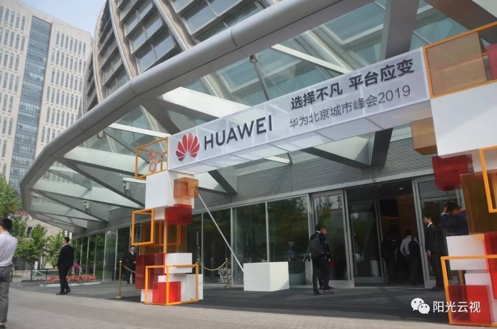
活动以“选择不凡，平台应变”为主题，面向北京建设数字生态城市的新目标，华为携手生态伙伴合力打造基于华为云的数字平台，使能北京城市数字化转型，加强城市精细管理、提高民生服务水平、促进经济高质量发展，实现城市协同、产业创新、行业升级。
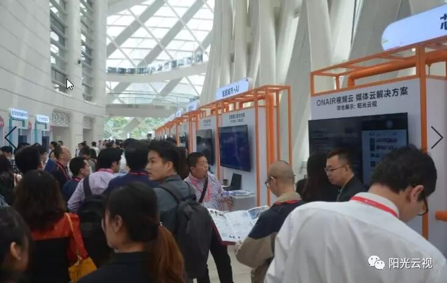
本次活动，阳光云视ONAIR智能云服务携媒体云、视频云解决方案在二层生态伙伴展区展出，一直以来，阳光云视以创新为本，为政府机构、企业应用、互联网、教育、金融等多个行业多种场景提供智能云服务解决方案，特别是在融合媒体、企业直播、企业内训、知识库建设、视频编辑转码等方向，成绩突出展会现场咨询络绎不绝，场面火爆。
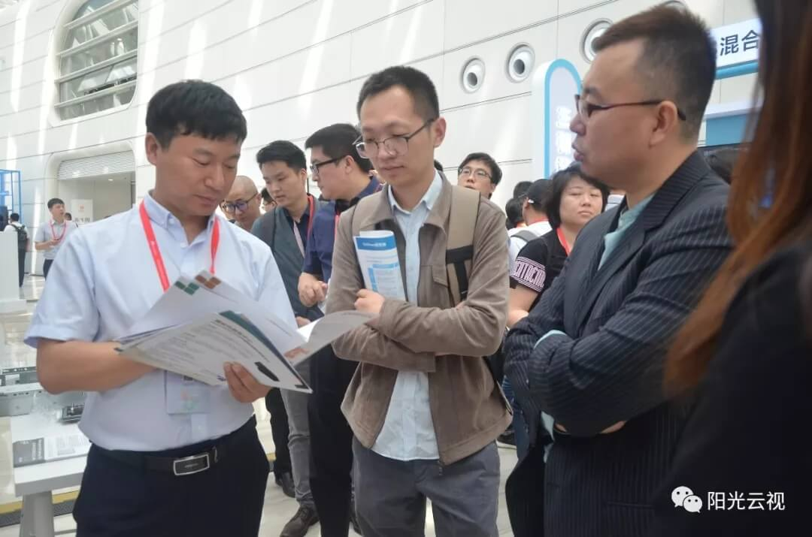
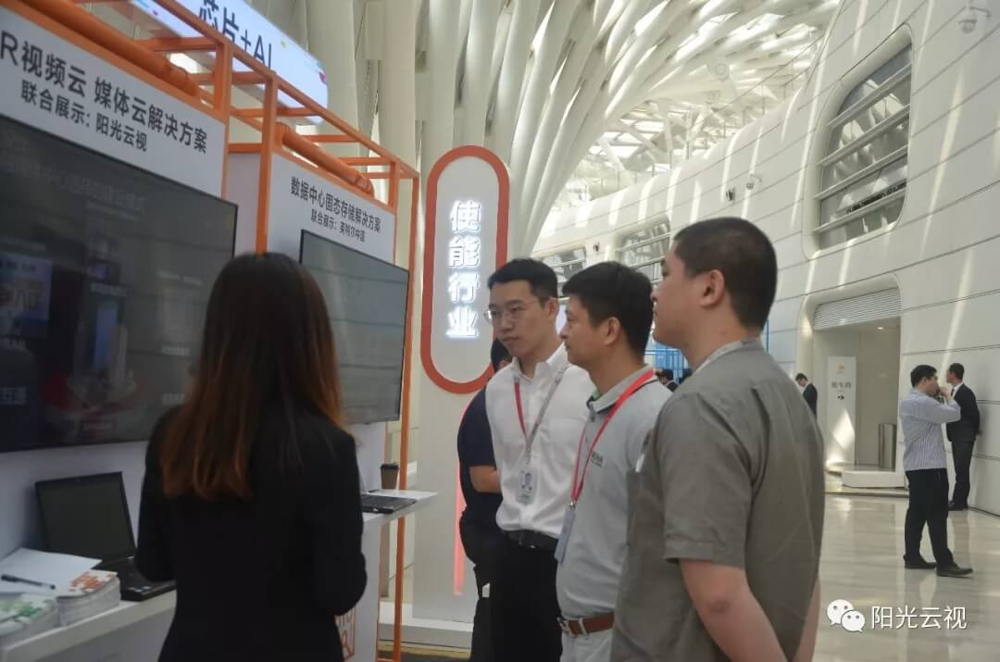
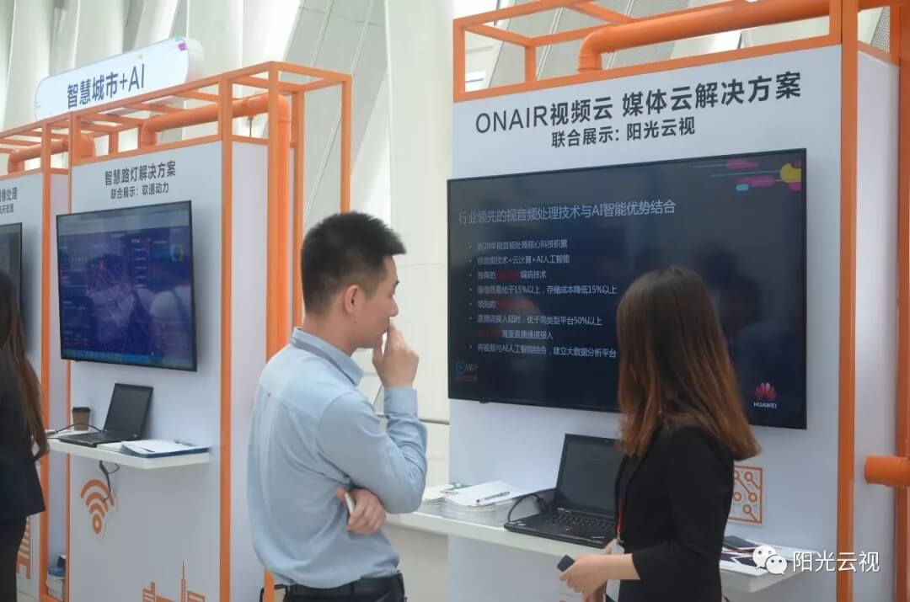
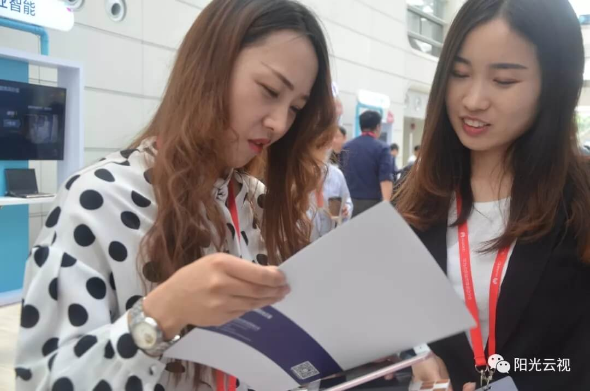

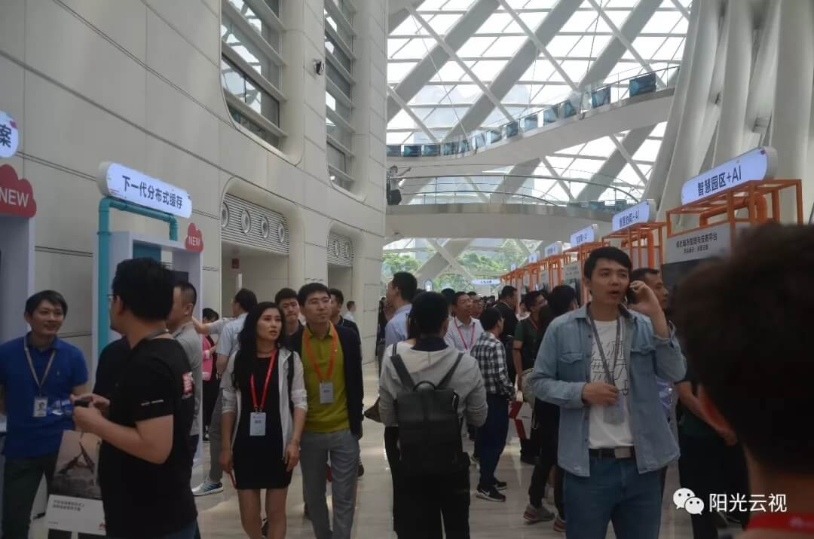
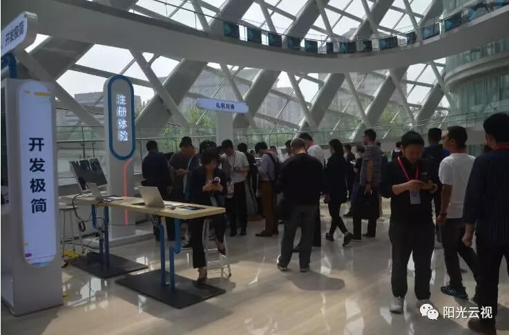
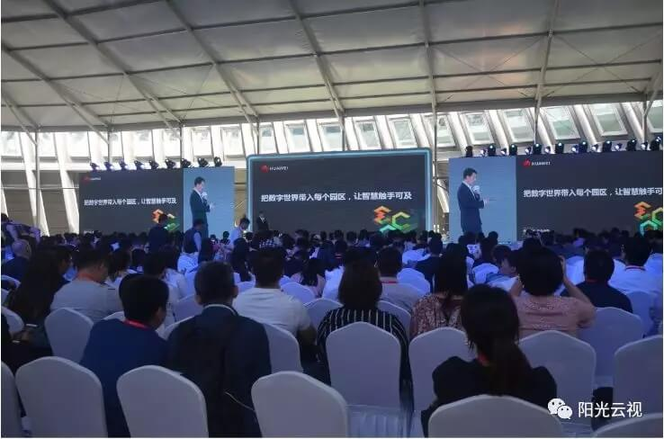
亮点一：视频云技术，哪家强？
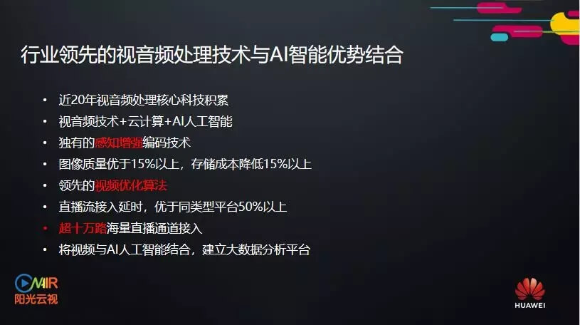
ONAIR视频云有着近20年视音频处理核心科技的积累，视音频技术+云计算+AI人工智能，还拥有独有的感知增强编码技术，图像质量优化15%以上，存储成本降低15%以上，领先的视频优化算法，直播流接入延时，优于同类型平台50%以上，超十万路海量直播通道接入，将视频与AI人工智能结合，建立大数据分析平台。
亮点二：ONAIR视频云服务应用广，场景多
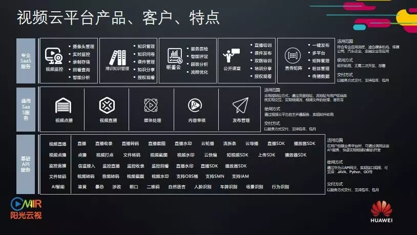
作为中国领先的视频云技术服务提供商，ONAIR博识知识库不仅能够满足各类企业内训数字化、移动化需求，更能将学习过程可视化，结果标准化，大大提高了企业内部知识留存与转化效率，深化人才培养，助力建设优质人才梯队。
除了企业内部，在营销推广方面ONAIR视频云平台将主流视频直播服务与专业媒体视频云处理技术相结合，为阿斯达克财经时评、广汽本田、汽场APP、远见财讯等多家企业提供活动盛典、新品发布直播、点播、智能字幕、视频拆条、转码等智能服务，缔造优质客户体验。
亮点三：专业融媒体平台，从设计到技术稳定输出
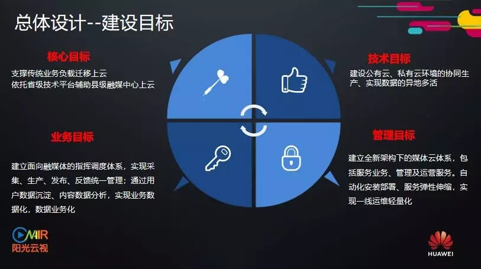
阳光云视ONAIR融媒体平台核心目标突出：支撑传统业务负载迁移上云，依托省级技术平台辅助县级融媒中心上云，技术目标专业：建设公有云、私有云环境的协同生产、实现数据的异地多活，业务目标明确：建立面向融媒体的指挥调度体系，实现采集、生产、发布、反馈统一管理；通过用户数据沉淀、内容数据分析，实现业务数据化，数据业务化，管理目标清晰：建立全新架构下的媒体云体系，包括服务业务、管理及运营服务。自动化安装部署、服务弹性伸缩，实现一线运维轻量化
在技术层面上，ONAIR融媒体平台智能匹配AI+，以数据支持智能感知，将内容赋能，高效支撑融媒体运营。平台从IaaS—PaaS—SaaS全方位满足各级媒体及行业客户融合生产、融合发布业务需求。同时提供专属运营服务，支持机构联合、多级联动，形成多元化移动传播矩阵实现流量转化与变现。
亮点四：媒体案例众多，经验丰富
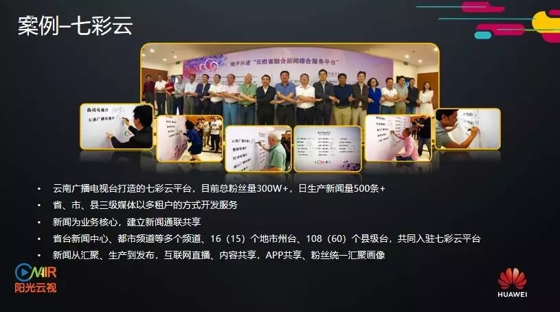
从CCTV到中国新闻社，从中华云到解放军报，从云南七彩云、江苏荔枝云到北京、贵州、重庆电视台，从济南、马鞍山、丽江再到淳安县、龙陵县、漾濞县、会泽县，我们走过大半个中国，覆盖了16个省、100多个市县，让传统媒体成功上云，助力媒体融合。
ONAIR中文寓意直播中，我们也将一直走在为客户服务的路上，与您携手共同开启新视界的大门。